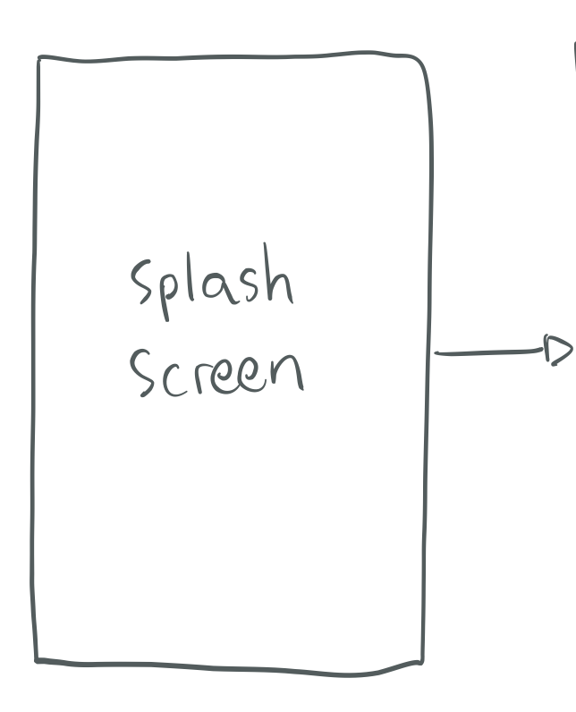

My high school entrepreneurship experience in creating a mobile application bringing audio sharing for all.
DISCLAIMER
This project was a startup company funded by employees from Microsoft Corporation, Google, and DLA Piper Law Firm. Unfortunately, I have been unsuccessful in bringing it to completion. But feel free to check out what I've done on it!
intro
Background
Taux is a music messaging application that was started by a group of high school students. The mission of Taux is to effectively and efficiently deliver emotion over a chat client by using music clips. The application will allow users to send a 15 second music clip along with text and emoji to their friends. In order to establish a complete database for its users, Taux plans to partner with companies like Soundcloud and Spotify.
Description
The primary purpose of the application was to send and receive clippings of music. In addition to this, the user was also able to text message and playback music. The company slogan was “Music is no longer recreation, it is communication” and we worked hard to make the user experience as efficient and seamless as possible so that Taux could serve as a practical medium of communication.
02
Preliminary Research
We used something we created, called SWOT analysis, where we take a look at the strengths, weaknesses, opportunities, and threats for our company.
Strenghts
A common problem in electronic communication is the inability to express emotion through text. Taux addresses these problems through a simple and seamless music messaging application.b> Taux also presents an opportunity for targeted advertising based on music choices similar to that of Pandora and Spotify.
Weaknesses
Some of the drawbacks include the fact that there is competition in our target market. Another weakness is that Taux may require education on part of the consumer. We tried to solve this with online tutorials as well as an in-app tutorial.
Opportunities
We have a network that branches out over many aspects of the business. In addition, the team knows that we are setting a precedent for high school entrepreneurship which we are capitalizing on. We have been in close communication with schools to present on entrepreneurship in classrooms.
Threats
Our main competitors at the time were Qwyrk, Rithm, Soundwave, and Pingtune. These apps lack efficiency and simplicity. Taux offers a simple and smooth user experience and after finalized partnerships, a larger music database. Rithm, however, is our biggest competitor with 759 thousand downloads from the app store and google play store so we will be trying to form Taux in a way that will effectively convince Rithm users to switch over to Taux.
03
Target Demographics
We researched what kind of user we are targeting and what their interests are:
Primary Market Demographic
The primary market for Taux are Android and iPhone users with ages ranging from 13-35 years. This age range is based off a study that is displayed on musicmachinery.com (chart shown below) and it represents the age groups where 40% regularly listen to streaming music.
Professional Demographic
The secondary market will be comprised of people who are music artists, disc jockeys, party planners, and music promoters. These people will be “future app users” because there is a low chance that any music professionals will use a new app. Most music artists will wait to install the app until it has been established and has received positive feedback. However, our idea of music messaging appears to be an ideal way for music artists and professionals to share and promote their music.
04
Prototyping
We began our journey with wireframes and application prototyping.
Low Fidelity Prototyping
We started off with a barebone structure to our application. We drew out the hierarchy of what the application should look like:

The first wireframe prototype of the user flow.
Mid Fidelity Prototype
Final Wireframe
As the primary designer on the team, I flushed out the rough edges of the mid-fi design, making it more in-line with iOS at the time.
05
In Retrospect
Sadly, we were unsuccessful in finishing out this project by graduation, so we have put it down. In retrospect, I felt that this was a great opportunity for a group of high schoolers to tackle an incredibly challenging task: creating a company. On top of our busy school schedules, it stretched our mental capacity. We learned about common business practices, legal compliance, product design, and the user research process. To some, this is an unsuccessful venture, but I consider it an important milestone that kickstarted my product design interest.